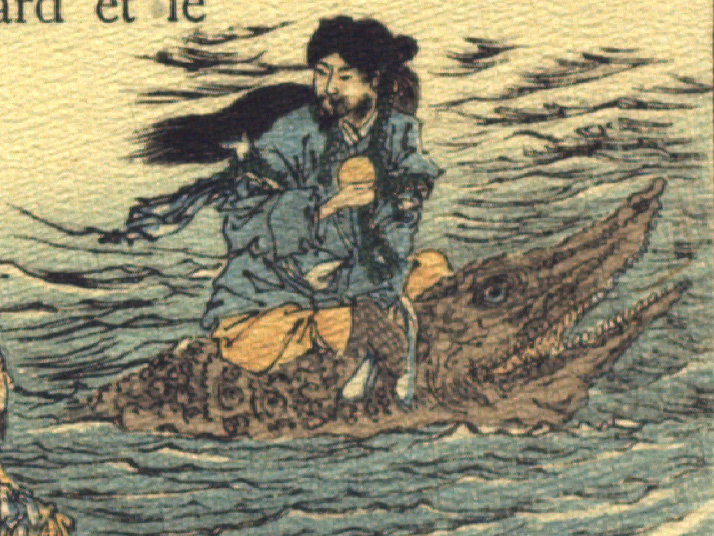

わに。全身は黒っぽく、ごつごつとしている。目玉は丸く青く、鼻は無い。口先が長く尖り、大きく裂けていて、開いた口に鋭い歯がたくさん並んでいる。背に山幸彦を乗せて、波間に浮んでいる。
著作者：J.Dautremer／出典：親書誌：U426_nichibunken_0108：Le Prince Feu-Brillant et le Prince Feu-Luisant／日付：2006／資源識別子：U426_nichibunken_0108_0003_0000
Copyright (c)2010- International Research Center for Japanese Studies, Kyoto, Japan. All rights reserved.